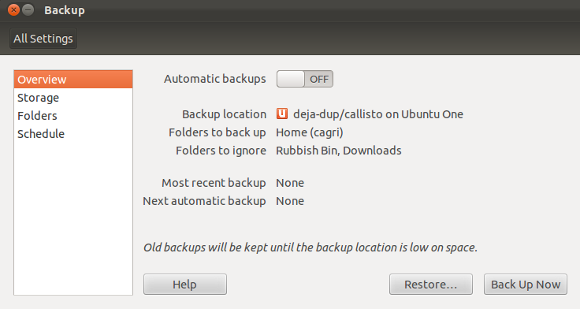
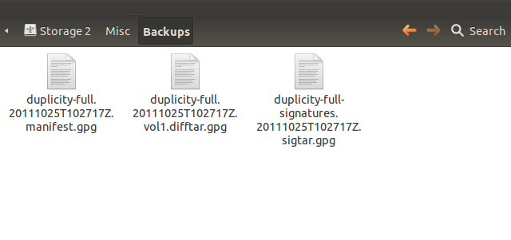
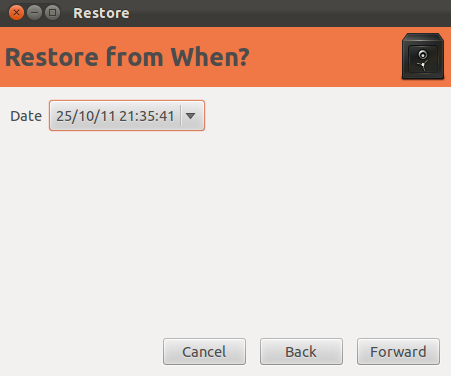

Deja Dup (deyca duup) Ubuntu 11.10 Oneiric Ocelot ile öntanımlı olarak gelen, kullanımı çok basit olmasına rağmen çok gelişmiş özelliklere sahip bir yedekleme aracıdır. Bu yazıda Deja Dup’u ve nasıl kullanıldığını tanıtmaya çalışacağım.
Nasıl kullanılıra geçmeden önce, yukarıda güçlü diye bahsettiğim özelliklere bir göz atalım. Deja Dup, otomatik olarak, yerelde, uzak bir bilgisayarda ya da günümüzün popüler terimi olan “bulut”ta, istediğimiz aralıklarla ve gerektiği taktirde verilerimizi şifreleyerek saklayabilen, yedeğimizin iki versiyonu arasındaki farkları gözeterek istediğimiz yedekten geri dönmemize olanak veren ve GNOME masaüstü ile oldukça iyi bütünleşen, deyim yerindeyse yedekleme araçlarının isviçre çakısıdır. Bütün bu özellikleri oldukça basit bir arayüz ile kullanıcıya sunabilmesi ise sanıyorum ki en büyük artılarından biridir.

Deja Dup’u başlatmak için Dash’imize deja yazmamız ve gelen siyah kasa simgesine tıklamamız yeterli. Bizi aşağıdakine benzer bir ekran karşılayacaktır. Bu ekranda görebildiğiniz gibi dört adet ana bölüm mevcut.

“Overview” isimli ilk bölümde bize geçerli olan ayarlarımızı gösteriyor. Bu pencerede etkileşime geçebileceğimiz tuşları, otomatik yedeklemeyi açıp kapatan On-Off seçeneği, yardım belgelerini görüntüleyen “Help” tuşu, yedekleme yapmamızı sağlayan “Back Up Now” tuşu ve herhangi bir yedeğimize geri dönmek istediğimizde kullanabileceğimiz “Restore” tuşu olarak sayabiliriz. “Backup location” olarak gösterilen yer, varsayılan olarak yedeklerimizi nerede saklayacağımızı, “Folders to back up” ile gösterilen yer hangi dosyaların yedeklerinin alınacağını, “Folders to ignore” yedekleme sürecinde hangi dosyaların yedeği alınacak dosyalar arasında bulunsa dahi görmezden gelineceğini, “Most recent backup” en son ne zaman yedek aldığımızı ve son olarak “Next automatic backup” ise bir sonraki otomatik yedeğin ne zaman alınacağını gösteriyor.
“Storage” bölümünde karşımıza, etkileşime girebileceğimiz iki alan çıkıyor “Backup location” ve “Folder”. Bu iki seçenekten daha önce de bahsettiğimiz “Backup location” aldığımız yedekleri nerede tutacağımızı ayarladığımız, “Folder” ise yedeklemeyi yaptığımız dizinde, yedekleri hangi dosyanın içinde oluşturucağımızı anlatıyor. “Backup location” seçenekleri arasında Ubuntu One, FTP, SSH, WebDAV, Windows Share, Custom Location ve Local Folder bulunuyor.

Diğerlerinin adlarından ötürü açıklamaya gerek olmamakla birlikte “Custom Location” kendi tanımlayacağımız bir URL’ye, “Local Folder” yerelde bulunan bir dosyaya, WebDAV ise yazılabilir bir web dizinine yedek alabileceğimizi işaret ediyor. Bu yazı için en çok kullanılacağını tahmin ettiğim yerelde bulunan bir dosyaya, örneğin harici harddiskimize, nasıl yedek alabileceğimiz senaryosunu kullanacağım. İlk olarak “Backup location”‘i “Local Folder” olarak seçip gelen ekranda “Folder” bölümüne harici diskim üzerinde bir yedekleme klasörünü gösteriyorum.

Sıradaki kısım “Folders”. Deja Dup’un hangi dosyaları yedekleyeceğini, hangilerini yedeklemeyeceğini seçeceğimiz bölüm işte bu bölüm. “Folders to back up” diye gösterilen alan hangi dosyalarımızı yedekleyeceğimizi seçeceğimiz, “Folders to ignore” diye gösterilen alan ise hangi dosyaları gözardı edeceğimizi belirlediğimiz alanlar. Artı ve eksi tuşlarını kullanarak bu bölümlere istediğimiz dosyaları ekleyip çıkartabiliriz. Ben ilk işlemin çok uzun sürmemesi için ev dizinimi yedeklemektense içindeki daha küçük bir klasörü yedekleyeceğim.

Deja Dup’un son ayar bölümü olan “Schedule” bölümüne geldi sıra. Burada iki adet seçeneğimiz mevcut. “How often to back up” ne sıklıkla yedek almak istediğimizi, “Keep backups” ise eski yedeklerin ne kadar tutulacağını belirleyen ayarlar. Tabii bu iki seçenek “Overview” bölmesinde gördüğümüz otomatik yedekleme seçeneğini açmadan bir işe yaramayacaklardır. Bu yazı için otomatik yedeklerimizin haftada bir alınmasını ve eski yedeklerimizin en az iki ay tutulmasını istediğimizi varsayarak ayarlarımızı ona göre düzenleyelim.

Bu işlemleri aslında her defasında yapmamıza gerek yok. Sadece ilk kullanımımızda ayarlayıp gerisini Deja Dup’a bırakmamız yeterli olacaktır. Yaptığımız ayarları görmek için Overview” bölümüne geri dönüp bir kontrol edelim. Eğer her şey istediğimiz gibi gözüküyorsa ilk yedeklemeyi başlatmak için “Back up Now” tuşuna basabiliriz. Bizi aşağıdaki gibi bir pencere karşılayacak. Bu pencerede yedeklerimizden geri dönmek için bir şifre kullanmak isteyip istemediğimizi seçiyoruz. Şifre kullanacağımızı varsayıp devam edelim.

Yedekleyeceğimiz dosyanın büyüklüğü, nereye yedeklediğimiz gibi etmenlere bağlı olarak bir süre bekleyeceğiz. Bu süre zarfında gelen ekranda hangi işlemin yapıldığını detaylar diyerek görebilirsiniz. İşlem bittiğinde şöyle bir uyarı balonu bize haber verecek.

Eğer yedeklerinizi koyduğunuz dosyaya giderseniz göreceksiniz ki Deja Dup bu işlem için kendine has dosyalar kullanıyor. Yani bütün dosyalarımızı birebir yedekleme alanımıza kopyalaması gibi bir durum söz konusu değil. Bunun en güzel yanlarından biri sadece değişiklikleri takip ederek daha kısa süren ve istediğimiz sürümüne geri dönebileceğimiz yedekler oluşturabilmesi. Zaten iyi bir yedekleme aracından da bu beklenirdi.

Daha önce de söylediğim gibi artık yedeklemeyi dert etmemize gerek yok. Deja Dup bizim için belirlediğimiz zamanlarda, seçtiğimiz dosyaların yedeklerini, istediğimiz yere otomatik olarak yedekleyecektir. Fakat elle bir yedekleme süreci başlatmak istersek ya da bir yedekten geri dönmek istersek “Overview” bölümünde bulunan “Restore” ve “Back Up Now” tuşlarını daima kullanabiliriz.
Örneğimize “Restore” ile aldığımız bir yedekten nasıl geri döneceğimizi göstererek devam edelim. İlgili butona bastığımızda karşımıza gelen ilk pencere bize yedeğimizi nerede tuttuğumuzu soruyor. “Forward” diyerek devam ediyoruz.

Yine yedeklerimize bağlı olarak kısa bir süre gösterdiğimiz dosyayı kontrol ediyor ve bize hangi tarihte aldığımız yedeğe geri dönmek istediğimizi soruyor. Eğer aynı gün birden fazla yedek aldıysak aldığımız zamanı da görebiliyoruz.

Hangi yedekten geri döneceğimizi de seçtikten sonra bir kez daha “Forward” tuşuna basıyoruz ve bizi yeni bir pencere karşılıyor. Bu pencerede yedeklerimizi nereye geri koyacağını öğrenmek istiyor Deja Dup. Eğer dosyaların orijinal yerlerine koyulmalarını istiyorsak “Restore files to original locations” seçeneğini, yok eğer kendi istediğimiz harici bir dosyaya koymak istiyorsak “Restore to specific folder” seçeneğini işaretleyip işleme “Forward” tuşu ile devam ediyoruz.

Son olarak bize kontrol amaçlı yaptığımız seçenekleri gösteriyor. Eğer seçimlerimizden memnunsak “Restore” tuşu ile geri döndürme sürecini başlatabiliriz.

Şayet şifreleme kullandıysak bizden şifremizi girmemizi isteyecektir. Şifremizi girip devam edelim. Yedeğimizin büyüklüğüne bağlı olarak geri döndürme işlemi biraz zaman alacaktır. Geri döndürme işlemi başarılı olarak tamamlandığında bizi aşağıdakine benzer bir pencere karşılıyor.

Deja Dup’u kullanması işte bu kadar basit. Yazıyı bitirmeden son bir özelliğe daha değinelim. Diyelim ki yedeğini aldığımız bir dosya içerisinde bulunan önemli bir belgemizi istemeden sildik. Nasıl yapar ederiz de geri döneriz diye kara kara düşünmemize gerek yok. Yanlışlıkla belgemizi sildiğimiz dosya içerisinde sağ tıklayıp “Restore Missing Files…” dediğimizde bizi aşağıdakine benzer bir pencere karşılıyor ve kayıp olan dosyalarımızı gösteriyor. Döndürmek istediğimiz belgeyi seçip “Forward” diyoruz.

Yaptığımız seçimlerin bir özetini gösteriyor ve “Restore” tuşuna basmamızın ardından yine işlemin büyüklüğüne bağlı olarak kısa bir sürede geri getirme işlemini tamamlıyor. Tabii eğer şifre kullanmışsak bu arada bir kez de bizden şifremizi girmemizi istiyor.
Eksik dosyaları geri getirmenin dışında, değişiklik olmuş dosyaları da eski haline, dosyaya sağ tıkladığımızda karşımıza gelen “Revert to Previous Version…” seçeneğini kullanarak getirebiliyoruz. Bunun için izleyeceğemiz adımlar biraz önce örneklediğimiz kayıp dosyaları geri getirmek ile aynı.
Umarım Deja Dup ile ilgili aklınıza gelen soruların yanıtlarını bulabileceğiniz bir belge olmuştur. Veri kaybı yaşayamacağınız günler dilerim :)